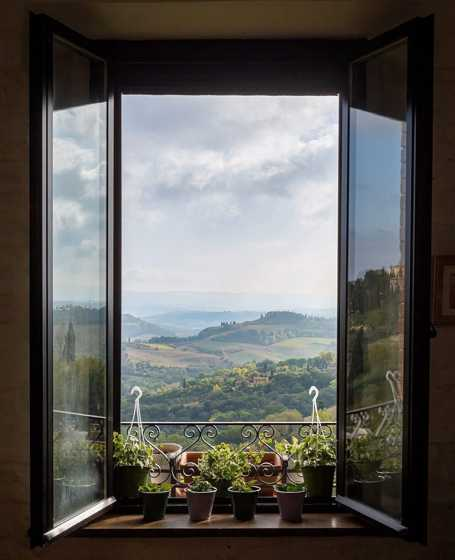
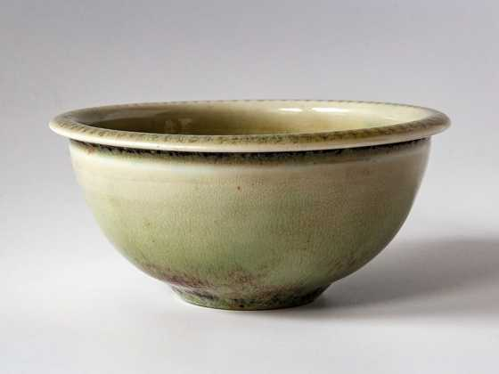

About
お店の由来と想い
Instagram(@cafe_du_monaco2024)で確認できたことをまとめます。
- 花・庭のプランニングを手がけるフローリスト「L'atelier Marie」のアカウントと関連づけられています。
- ハイライトに「フランス器展」「Alice上映会」「Citronnade(シトロナード)」があり、フランスの器やレモンの飲み物、催しを楽しめるお店のようです。
- 営業日は「月・火・土・日 10-16h」との記載があります。また「10/17〜暫く臨時休業」との告知がありました。最新の状況はInstagramでご確認ください。
店名「モナコ」の意味・由来は確認できていません。このページの「花・器・レモン」の色づかいは、上記の投稿から制作側が受けたイメージです。

Menu
メニュー・提供内容
確認できた範囲では、レモン系ドリンク「Citronnade(シトロナード)」があります。そのほかのメニュー・価格は準備中です。写真はカフェのイメージです。
Citronnade(シトロナード)
Instagramのハイライトに記載。価格 準備中

コーヒー・お飲み物
詳細 準備中

お茶・軽食
詳細 準備中





Voice
口コミ
イメージ例
窓からの光がきれいで、器を眺めながらゆっくりできました。
イメージ例
爽やかなレモンの飲み物で、昼下がりに一息つけました。
イメージ例
花のある空間で、静かな時間を過ごせました。
上の3件は制作側が作成したイメージ例で、実際のお客様の声ではありません。
Access
アクセス・ご案内
| 所在地 | 〒885-0071 宮崎県都城市中町13-10-2 |
|---|---|
| 電話 | 準備中 |
| 営業時間・定休日 | 準備中 Instagramに「月火土日 10-16h」「臨時休業」の記載あり。最新情報はInstagramでご確認ください。 |
| @cafe_du_monaco2024 |